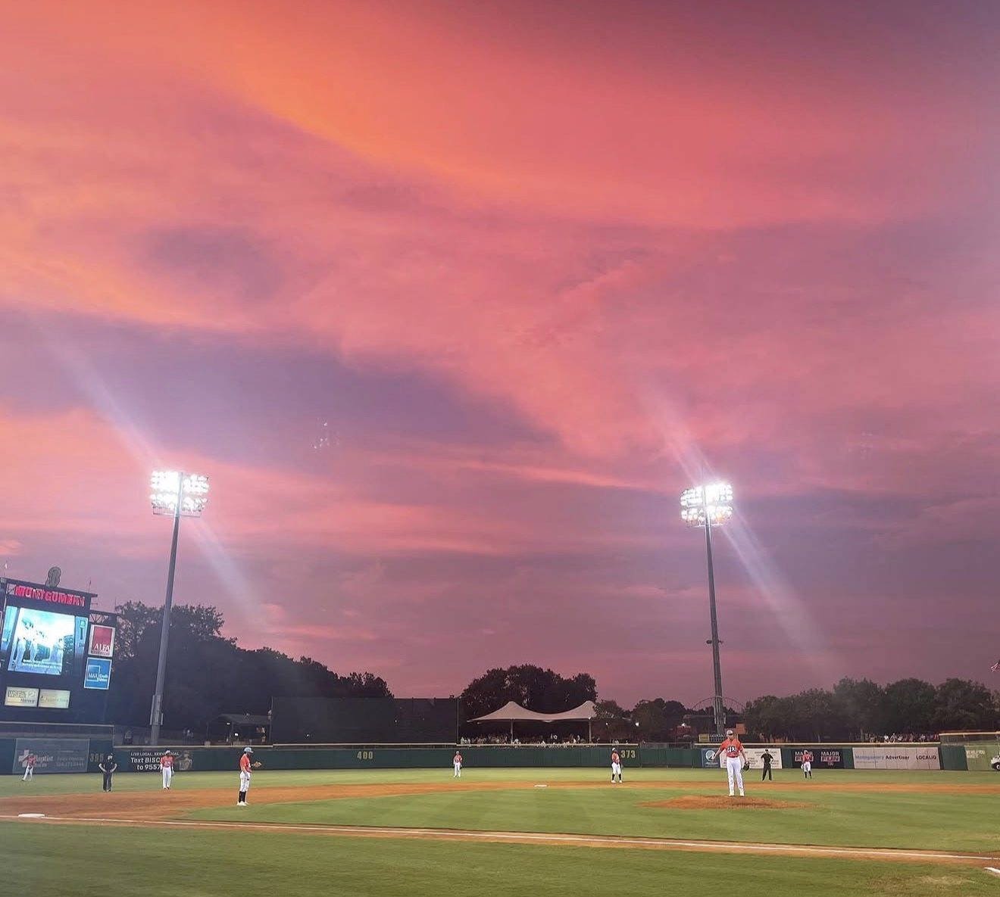

01 / Sports & community
Beyond the ballpark
Sierra's interest in sports began partly with her father's passion for the Dallas Cowboys. While earning her communications degree, she worked as a Community and Fan Engagement Manager for the Montgomery Biscuits. She photographed this baseball game during her time with the team, capturing a sunset that connects her interest in sports with her creative eye.
She also follows Formula 1, the WNBA, and professional wrestling. Lewis Hamilton, Rhea Ripley, Paige Bueckers, and Jon Moxley stand out to her because of their strong, commanding personalities and the stories behind their careers.